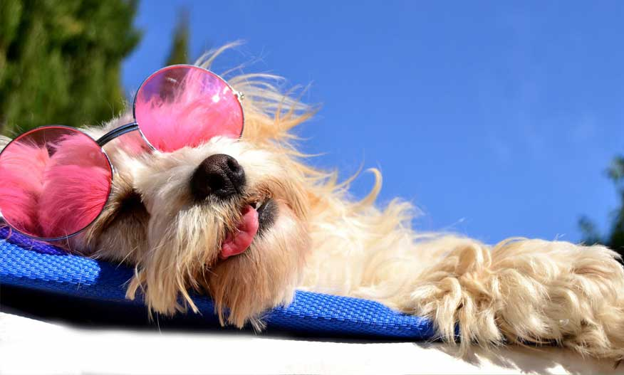

Hotel pet
O Hotel Pet do Petshop da Belinha é a solução perfeita e acolhedora para quando você precisa se ausentar. Mais do que um simples canil, criamos um ambiente que funciona como um verdadeiro lar temporário, seguro e divertido, onde o bem-estar do seu pet é a nossa prioridade. Supervisionado por nossa equipe atenciosa e apaixonada, seu companheiro desfrutará de instalações confortáveis, com áreas dedicadas ao descanso e espaços seguros para brincadeiras e socialização controlada. Seguimos rigorosamente a rotina individual de cada hóspede, incluindo horários de alimentação, medicação (se necessário) e descanso.

Importancia
A escolha de um Hotel Pet de confiança é crucial para garantir a saúde física e emocional do seu cão ou gato enquanto você está fora. Deixar o pet sozinho em casa, mesmo com visitas rápidas, pode causar ansiedade de separação e tédio, levando a comportamentos destrutivos ou depressão. Um bom hotel, como o da Belinha, oferece supervisão 24 horas e garante que qualquer emergência médica seja tratada imediatamente. Além disso, proporcionamos uma rotina de exercícios, brincadeiras e, quando apropriado, a socialização controlada com outros animais, estimulando a mente e gastando energia acumulada. A experiência de um ambiente seguro e estruturado faz com que o pet volte para casa feliz e equilibrado.
